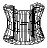
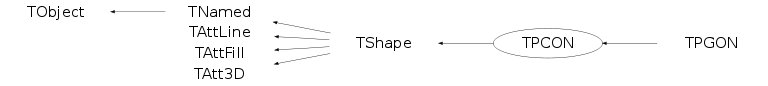

class TPCON: public TShape

PCON is a polycone. It has the following parameters:
- name name of the shape
- title shape's title
- material (see TMaterial)
- phi1 the azimuthal angle phi at which the volume begins (angles
are counted counterclockwise)
- dphi opening angle of the volume, which extends from
phi1 to phi1+dphi
- nz number of planes perpendicular to the z axis where
the dimension of the section is given -- this number
should be at least 2
- rmin array of dimension nz with minimum radius at a given plane
- rmax array of dimension nz with maximum radius at a given plane
- z array of dimension nz with z position of given plane
Function Members (Methods)
public:
| TPCON() | |
| TPCON(const char* name, const char* title, const char* material, Float_t phi1, Float_t dphi1, Int_t nz) | |
| virtual | ~TPCON() |
| void | TObject::AbstractMethod(const char* method) const |
| virtual void | TObject::AppendPad(Option_t* option = "") |
| virtual void | TObject::Browse(TBrowser* b) |
| static TClass* | Class() |
| virtual const char* | TObject::ClassName() const |
| virtual void | TNamed::Clear(Option_t* option = "") |
| virtual TObject* | TNamed::Clone(const char* newname = "") const |
| virtual Int_t | TNamed::Compare(const TObject* obj) const |
| virtual void | TNamed::Copy(TObject& named) const |
| virtual void | DefineSection(Int_t secNum, Float_t z, Float_t rmin, Float_t rmax) |
| virtual void | TObject::Delete(Option_t* option = "")MENU |
| Int_t | TAttLine::DistancetoLine(Int_t px, Int_t py, Double_t xp1, Double_t yp1, Double_t xp2, Double_t yp2) |
| virtual Int_t | DistancetoPrimitive(Int_t px, Int_t py) |
| virtual void | TObject::Draw(Option_t* option = "") |
| virtual void | TObject::DrawClass() constMENU |
| virtual TObject* | TObject::DrawClone(Option_t* option = "") constMENU |
| virtual void | TObject::Dump() constMENU |
| virtual void | TObject::Error(const char* method, const char* msgfmt) const |
| virtual void | TObject::Execute(const char* method, const char* params, Int_t* error = 0) |
| virtual void | TObject::Execute(TMethod* method, TObjArray* params, Int_t* error = 0) |
| virtual void | TObject::ExecuteEvent(Int_t event, Int_t px, Int_t py) |
| virtual void | TObject::Fatal(const char* method, const char* msgfmt) const |
| virtual void | TNamed::FillBuffer(char*& buffer) |
| virtual TObject* | TObject::FindObject(const char* name) const |
| virtual TObject* | TObject::FindObject(const TObject* obj) const |
| virtual const TBuffer3D& | GetBuffer3D(Int_t reqSections) const |
| virtual Float_t | GetDhi1() const |
| virtual Option_t* | TObject::GetDrawOption() const |
| static Long_t | TObject::GetDtorOnly() |
| virtual Float_t* | GetDz() const |
| virtual Color_t | TAttFill::GetFillColor() const |
| virtual Style_t | TAttFill::GetFillStyle() const |
| virtual const char* | TObject::GetIconName() const |
| virtual Color_t | TAttLine::GetLineColor() const |
| virtual Style_t | TAttLine::GetLineStyle() const |
| virtual Width_t | TAttLine::GetLineWidth() const |
| TMaterial* | TShape::GetMaterial() const |
| virtual const char* | TNamed::GetName() const |
| virtual Int_t | GetNdiv() const |
| virtual Int_t | TShape::GetNumber() const |
| virtual Int_t | GetNumberOfDivisions() const |
| virtual Int_t | GetNz() const |
| virtual char* | TObject::GetObjectInfo(Int_t px, Int_t py) const |
| static Bool_t | TObject::GetObjectStat() |
| virtual Option_t* | TObject::GetOption() const |
| virtual Float_t | GetPhi1() const |
| virtual Float_t* | GetRmax() const |
| virtual Float_t* | GetRmin() const |
| virtual const char* | TNamed::GetTitle() const |
| virtual UInt_t | TObject::GetUniqueID() const |
| Int_t | TShape::GetVisibility() const |
| virtual Bool_t | TObject::HandleTimer(TTimer* timer) |
| virtual ULong_t | TNamed::Hash() const |
| virtual void | TObject::Info(const char* method, const char* msgfmt) const |
| virtual Bool_t | TObject::InheritsFrom(const char* classname) const |
| virtual Bool_t | TObject::InheritsFrom(const TClass* cl) const |
| virtual void | TObject::Inspect() constMENU |
| void | TObject::InvertBit(UInt_t f) |
| virtual TClass* | IsA() const |
| virtual Bool_t | TObject::IsEqual(const TObject* obj) const |
| virtual Bool_t | TObject::IsFolder() const |
| Bool_t | TObject::IsOnHeap() const |
| virtual Bool_t | TNamed::IsSortable() const |
| virtual Bool_t | TAttFill::IsTransparent() const |
| Bool_t | TObject::IsZombie() const |
| virtual void | TNamed::ls(Option_t* option = "") const |
| void | TObject::MayNotUse(const char* method) const |
| virtual void | TAttLine::Modify() |
| virtual Bool_t | TObject::Notify() |
| void | TObject::Obsolete(const char* method, const char* asOfVers, const char* removedFromVers) const |
| static void | TObject::operator delete(void* ptr) |
| static void | TObject::operator delete(void* ptr, void* vp) |
| static void | TObject::operator delete[](void* ptr) |
| static void | TObject::operator delete[](void* ptr, void* vp) |
| void* | TObject::operator new(size_t sz) |
| void* | TObject::operator new(size_t sz, void* vp) |
| void* | TObject::operator new[](size_t sz) |
| void* | TObject::operator new[](size_t sz, void* vp) |
| virtual void | TShape::Paint(Option_t* option = "") |
| virtual void | TObject::Pop() |
| virtual void | TNamed::Print(Option_t* option = "") const |
| virtual Int_t | TObject::Read(const char* name) |
| virtual void | TObject::RecursiveRemove(TObject* obj) |
| virtual void | TAttFill::ResetAttFill(Option_t* option = "") |
| virtual void | TAttLine::ResetAttLine(Option_t* option = "") |
| void | TObject::ResetBit(UInt_t f) |
| virtual void | TObject::SaveAs(const char* filename = "", Option_t* option = "") constMENU |
| virtual void | TAttFill::SaveFillAttributes(ostream& out, const char* name, Int_t coldef = 1, Int_t stydef = 1001) |
| virtual void | TAttLine::SaveLineAttributes(ostream& out, const char* name, Int_t coldef = 1, Int_t stydef = 1, Int_t widdef = 1) |
| virtual void | TObject::SavePrimitive(ostream& out, Option_t* option = "") |
| void | TObject::SetBit(UInt_t f) |
| void | TObject::SetBit(UInt_t f, Bool_t set) |
| virtual void | TObject::SetDrawOption(Option_t* option = "")MENU |
| static void | TObject::SetDtorOnly(void* obj) |
| virtual void | TAttFill::SetFillAttributes()MENU |
| virtual void | TAttFill::SetFillColor(Color_t fcolor) |
| virtual void | TAttFill::SetFillStyle(Style_t fstyle) |
| virtual void | TAttLine::SetLineAttributes()MENU |
| virtual void | TAttLine::SetLineColor(Color_t lcolor) |
| virtual void | TAttLine::SetLineStyle(Style_t lstyle) |
| virtual void | TAttLine::SetLineWidth(Width_t lwidth) |
| virtual void | TShape::SetName(const char* name) |
| virtual void | TNamed::SetNameTitle(const char* name, const char* title) |
| virtual void | SetNumberOfDivisions(Int_t p) |
| static void | TObject::SetObjectStat(Bool_t stat) |
| virtual void | TNamed::SetTitle(const char* title = "")MENU |
| virtual void | TObject::SetUniqueID(UInt_t uid) |
| virtual void | TShape::SetVisibility(Int_t vis)MENU |
| virtual void | ShowMembers(TMemberInspector& insp) |
| virtual Int_t | TNamed::Sizeof() const |
| virtual void | Sizeof3D() const |
| virtual void | Streamer(TBuffer& b) |
| void | StreamerNVirtual(TBuffer& b) |
| virtual void | TObject::SysError(const char* method, const char* msgfmt) const |
| Bool_t | TObject::TestBit(UInt_t f) const |
| Int_t | TObject::TestBits(UInt_t f) const |
| void | TShape::TransformPoints(Double_t* points, UInt_t NbPnts) const |
| virtual void | TObject::UseCurrentStyle() |
| virtual void | TObject::Warning(const char* method, const char* msgfmt) const |
| virtual Int_t | TObject::Write(const char* name = 0, Int_t option = 0, Int_t bufsize = 0) |
| virtual Int_t | TObject::Write(const char* name = 0, Int_t option = 0, Int_t bufsize = 0) const |
protected:
| TPCON(const TPCON&) | |
| virtual void | TObject::DoError(int level, const char* location, const char* fmt, va_list va) const |
| virtual void | TShape::FillBuffer3D(TBuffer3D& buffer, Int_t reqSections) const |
| virtual void | FillTableOfCoSin(Double_t phi, Double_t angstep, Int_t n) const |
| Int_t | TShape::GetBasicColor() const |
| virtual void | MakeTableOfCoSin() const |
| void | TObject::MakeZombie() |
| TPCON& | operator=(const TPCON&) |
| virtual void | SetPoints(Double_t* points) const |
| virtual Bool_t | SetSegsAndPols(TBuffer3D& buffer) const |
| Int_t | TShape::ShapeDistancetoPrimitive(Int_t numPoints, Int_t px, Int_t py) |
Data Members
public:
| enum TObject::EStatusBits { | kCanDelete | |
| kMustCleanup | ||
| kObjInCanvas | ||
| kIsReferenced | ||
| kHasUUID | ||
| kCannotPick | ||
| kNoContextMenu | ||
| kInvalidObject | ||
| }; | ||
| enum TObject::[unnamed] { | kIsOnHeap | |
| kNotDeleted | ||
| kZombie | ||
| kBitMask | ||
| kSingleKey | ||
| kOverwrite | ||
| kWriteDelete | ||
| }; |
protected:
| Double_t* | fCoTab | ! Table of cos(fPhi1) .... cos(fPhil+fDphi1) |
| Float_t | fDphi1 | range in phi |
| Float_t* | fDz | [fNz] pointer to array of half lengths in z |
| Color_t | TAttFill::fFillColor | fill area color |
| Style_t | TAttFill::fFillStyle | fill area style |
| Color_t | TAttLine::fLineColor | line color |
| Style_t | TAttLine::fLineStyle | line style |
| Width_t | TAttLine::fLineWidth | line width |
| TMaterial* | TShape::fMaterial | Pointer to material |
| TString | TNamed::fName | object identifier |
| Int_t | fNdiv | number of divisions |
| Int_t | TShape::fNumber | Shape number |
| Int_t | fNz | number of z segments |
| Float_t | fPhi1 | lower phi limit |
| Float_t* | fRmax | [fNz] pointer to array of outside radiuses |
| Float_t* | fRmin | [fNz] pointer to array of inside radiuses |
| Double_t* | fSiTab | ! Table of sin(fPhi1) .... sin(fPhil+fDphi1) |
| TString | TNamed::fTitle | object title |
| Int_t | TShape::fVisibility | Visibility flag |
Class Charts
{kind=link}
{kind=link}
{kind=link}
{kind=link}

Function documentation
TPCON(const char* name, const char* title, const char* material, Float_t phi1, Float_t dphi1, Int_t nz)
PCON shape normal constructor Parameters of the nz positions must be entered via TPCON::DefineSection.
void DefineSection(Int_t secNum, Float_t z, Float_t rmin, Float_t rmax)
Defines section secNum of the polycone
- rmin radius of the inner circle in the cross-section
- rmax radius of the outer circle in the cross-section
- z z coordinate of the section
Int_t DistancetoPrimitive(Int_t px, Int_t py)
Compute distance from point px,py to a PCON Compute the closest distance of approach from point px,py to each computed outline point of the PCON.
void FillTableOfCoSin(Double_t phi, Double_t angstep, Int_t n) const
Fill the table of cos and sin to prepare drawing